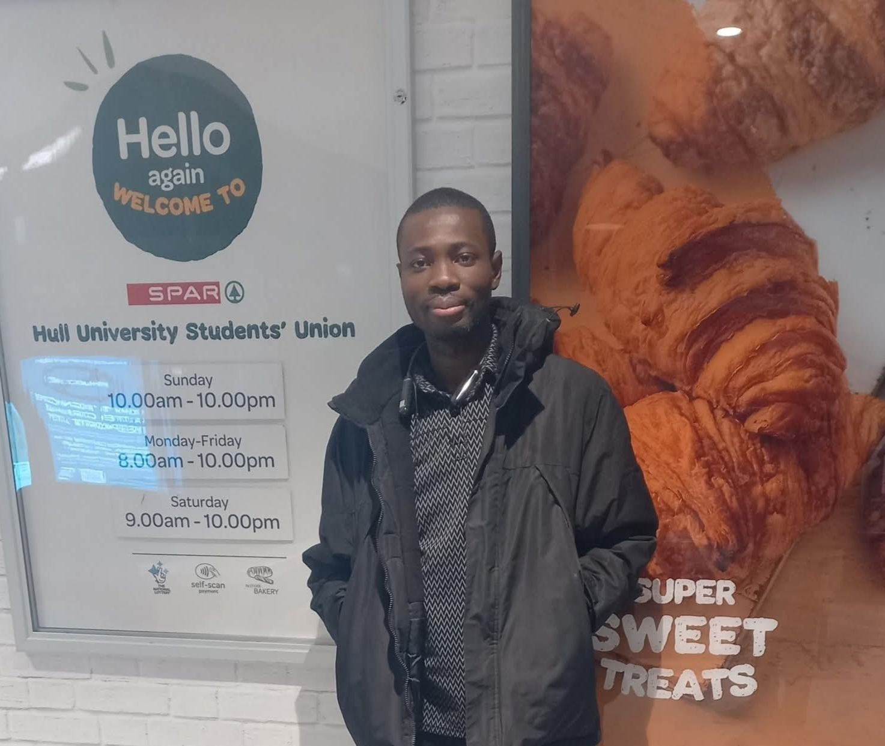

About Me
I am Prince Sackey, an AI & Data Science practitioner with a strong foundation in Mathematics Education (QTS). My work blends machine learning, model evaluation, fairness, and responsible AI with real-world teaching and analytical experience across Ghana and the United Kingdom.
I am currently completing my MSc in Artificial Intelligence & Data Science in Hull, UK, focusing on model evaluation, data mining, and the role of AI in Further Education. My academic and professional journey reflects a commitment to building intelligent systems that are fair, reliable, and impactful.
Beyond AI, I bring over a decade of experience teaching Mathematics and ICT, supporting learners with diverse needs, and applying structured problem‑solving to both educational and technical environments.